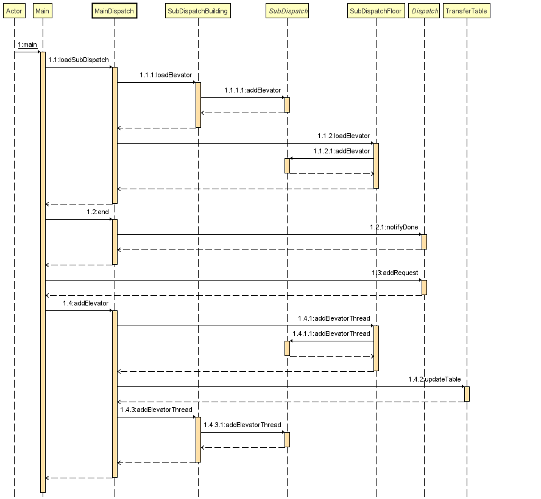
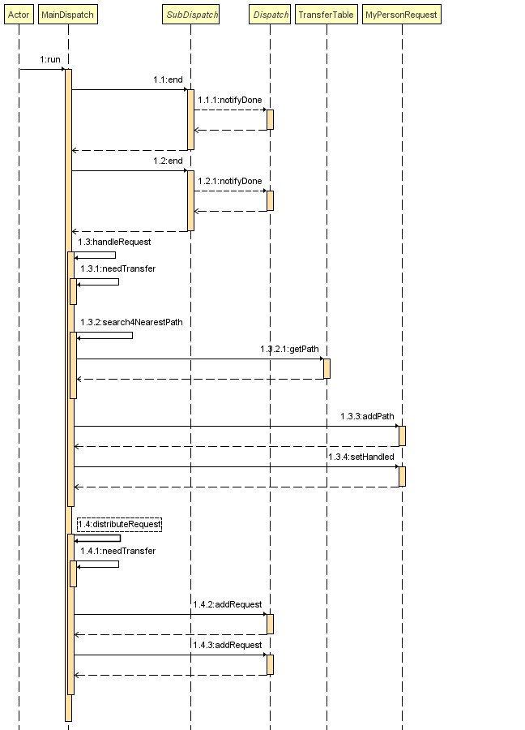
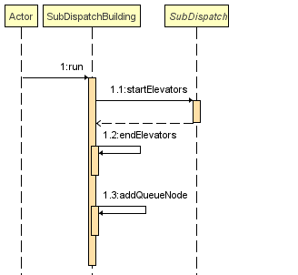
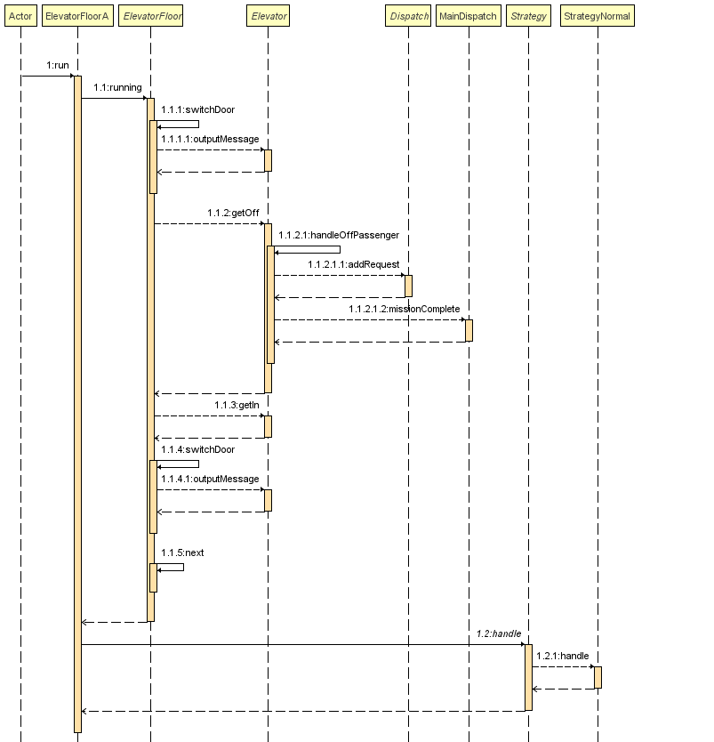

电梯难题
这单元作业的主题是电车电梯难题,整体感觉还行,如果不去纠结最优,明白锁这个概念的话,实现难度还是挺低的。（感觉不如第一单元。。。。难度）
同步和锁
本次作业我没有使用lock(因为第一次作业用的.对于同步块的选择,我的想法如下synchronized,懒得改了)
为何需要同步代码块
同步块主要用于解决线程冲突问题.怎么判断线程冲突?我的判断方法是判断线程之间权力是否对等.
权力是否对等指的是读写权力是否相等.如果线程之间不是全读,或者全写的话,那么对这个临界数据的操作就必须是原子性的,既,其必须处于同步代码块.
怎么放置同步代码块
语法层面这个很简单,不赘诉了.(有手就行)重点是如何将其最小化,提高线程的效率.
我的原则如下:
run方法里面没有锁:run方法不放置同步代码块,只调用类方法,锁由对应类方法实现,.这样使得run方法简单,也不会出现疏忽导致一个锁锁了不应该的方法.- 锁指出具体的对象,而不是锁方法:锁方法锁的是
this指针,这代表着this被共享出去,但是实际情况下并不是这样,比如调度器既是生产者也是消费者,如果锁了this,那么电梯读数据的时候,调度器也不能从输入线程获得数据,这样输入线程和电梯线程同时被阻塞. - 变量的声明放出锁外,锁内只有对共享资源的读/写等操作:这个容易理解,让锁最小.
架构分享
整体框架
下面是我最后一次迭代出来的架构:
这是我的处理请求的模型:
这是我的UML图(红色部分为第二次作业加入内容,蓝色部分为第三次作业加入内容):
调度器:
主调度器使用了单例模式
第二次作业中因为floor电梯的加入,我重构了整个subDispatch分支,抽象了部分subDispatchBuilding的行为出来.
第三次作业加入了TransferTable.
TransferTable保存了整个大楼的联通情况,通过Dijstra算法获得最优路径.
电梯:
第二次作业我重构了整个Elevetor的子类,增加了ElevatorBuilding和ElevatorFloor,将部分Elevetor的属性下放.
ElevatorFloorA和ElevatorBuildingA本是为了防止特种电梯,比如停奇数楼层等,但是没有这种电梯,但是架构就没有改变,留下了拓展的余地.
OutputThread是用于输出信息的,加了一层封装保证线程安全
这是我的协作图:
主函数/Input Thread:

主调度器的协作图:

副调度器:

电梯:

Strategy本是为了应付早高峰等特殊场景二出现的,但是因为没有这些要求,所以Strategy整个就是一个空类.
细节分析
调度器
我的调度器分为主调度器(Main Dispatch)和副调度器(SubDispatch).
主调度器负责获得输入线程的请求,规划请求的路线,并把请求分配给对应的副调度器
副调度器负责获得主调度器分配的请求,并根据请求的from安置在容器的不同位置,方便电梯根据自己的位置寻找请求.
因此调度器既是生产者也是消费者.
class Dispatch implements Runnable{
//...
public void run(){
while(true) {
MyPersonRequest get = getRequest(); //消费者获得数据
if (isInterrupted) {
end(); //用于终止子线程
break;
}
distributeRequest(get); // 分发数据
}
}
}电梯
电梯我的策略是类似als的策略,使用的自由竞争的策略.
电梯的启动
电梯静置状态搜索队列,寻找离自己最远的哪一个请求,然后行驶到对应的位置接受请求.
电梯的捎带
电梯在行驶到目的地之前会捎带沿途中同方向的请求.捎带请求之后,更新自己的目的地.
class Elevator implements Runnable{
//...
public void run(){
while() {
MyPersonRequest get = getFreeRequest();
if(isInterrupted){
break;
}
running(get.getTo());
}
}
public void running(){
while(!isArrival()){
if(needOpen()){
getIn();
getOff();
}
next();//去往下一层
}
}
}请求的规划和换乘
规划
本次作业,对于请求的规划我使用的是Dijstra算法求得路径最短和换乘最少的一个最优结果.
图的初始化:
对于请求换乘只存在环状电梯,所以换乘最少也是只针对环状电梯,因此,对于图我的初始化方法是:
- 对于竖形电梯,两个结点的距离如下:
int dist = abs(floor1-floor2); - 对于环形电梯,两个结点的距离如下:
int dist = (nonStop())?:1:114514; //如果这两个结点能直达则为1,不能直达则为一个极大值
这样如果两个环状电梯结点不能直达,则其路径长度大于等于2,如果能直达则为1,相当于加入了换乘惩罚.
至于Dijstra算法则不再赘述,求得最短路径,获得前导结点,修改请求即可.
换乘
在第一次作业中,为了防止电梯没有完成任务就结束,我建立了电梯和主调度器的反馈管道.当任务完成,则主调度器记录完成的任务增加,这样在结束的时候,只需要判断完成的任务是否等于输入的任务.这一个反馈管道在第三次作业中也承担了换乘请求的处理,电梯完成第一阶段任务之后,将请求返回主调度器,主调度器就能继续对其进行分发.
请求的维护
如果一个请求为1-FROM-A-5-TO-D-8,经过Dijstra算法之后,其路径为:
为了防止电梯获得不应该获得的数据,对于请求的读取由两个指针控制,分别为from,to,这样,完成一个任务之后,把from指针对应的结点删除,两个结点移动一个结点,这就变成了一个新的请求.其流程图如下:

自动化测试
本单元的自动化测试特别感想@wzm大佬,和我一起结对编程,我负责数据生成部分,他负责正确性判断.
数据生成思路:
主要数据分类为增加电梯指令,高并发数据,捎带数据,弱数据.
竖形电梯数据:
该类数据生成较为简单,只需要选定起始楼层和终止楼层即可.为了数据强度,在决定起始楼层之后,在确定一个gap大小,则
$$[baseFloor-gap,baseFloor) \bigcup (baseFloor,baseFloor+gap]$$则为目的楼层的范围,在这个范围内的值多次取值则为目的楼层.只要取值次数够多,则并发数据强度就够高.同时,对于捎带类数据,选择该范围内的数据为起始楼层,就能建立数据之间的捎带关系.
环状电梯数据:
数据生成方法和上面类似,只是,环状电梯需要维护一个transferTable表,该表记录了building之间的联通关系,在生成新的电梯之后更新它,之后在生成并发数据和捎带数据,则要在表中记录的楼层周围生成,以测试环状电梯的功能.
bug分析
自我bug分析
我对自己代码的检查方法主要是单元测试,在实现一个功能之后,先测试功能的正确性,再继续编写其他部分.比如路径规划部分,在编写完之后,输入请求测试其功能.在整体编写完毕之后,则是使用评测机进行随机测试.
分享一个很有意思的bug:
我调度器的run方法会在开始的时候将该调度器管理的电梯全部start.同时,输入线程如果输入增加电梯的请求,那么副调度其会在容器里面增加对应的电梯,并start该电梯.这个时候问题就出现了,如果一个新增的电梯的请求在调度器start电梯之前出现,那么这个电梯就会被start两次.其原因就是增加电梯这件事情不是由副调度器完成,而是主调度器直接访问对应副调度器的容器然后增加,并且start,也就是说一个线程是两个线程的子线程,这是不安全的.
最后的解决方法则是将容器分裂为两个,一个面向副调度器,一个面向主调度器.这样一个解决方法并不优雅,但能用就行.
他人bug分析
对于他人的bug的发现方法主要是评测机跑数据.
总结
本次作业感觉在处理上面没有第一单元困难,只需要写好每一个电梯的功能即可,因此只要明白锁和一些设计模式(流水线模式等),即可完成本单元作业,哪怕使用自由竞争也依然有很高的性能分.
线程安全上,只要按照前面的原则判断是否需要同步代码块,怎样安排同步代码块,至少先线程通信的时候,临界区的线程安全是没有问题的.
架构设计上,主要就是生产者消费者模型和流水线模型,分清楚每一个类在和不同线程之间中承担什么工作,做好抽象,难度尚可.
至于细节上面,使用Dijstra这些成熟的算法,而不是自己造轮子.
希望下一单元越来越好.